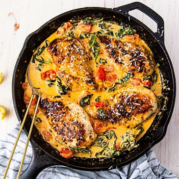

Tuscan chicken

Description
Tuscan chicken is a simple but very richly flavoured dish made with chicken cooked and served with
a creamy garlic sauce with spinach and sun dried tomatoes.
This thing is heaven on a plate, this is Tuscan cuisine at its finest
Ingridients
- 1 tbsp. extra-virgin olive oil
- 4 boneless skinless chicken breasts
- Kosher salt
- Freshly ground black pepper
- 1 tsp. dried oregano
- 3 tbsp. butter
- 3 cloves garlic, minced
- 1 1/2 c. cherry tomatoes, halved
- 3 c. baby spinach
- 1/2 c. heavy cream
- 1/4 c. freshly grated Parmesan
- Lemon wedges, for serving
Steps
- In a skillet over medium heat, heat oil. Add chicken and season with salt, pepper, and oregano. Cook until golden and no longer pink, 8 minutes per side. Remove from skillet and set aside.
- In the same skillet over medium heat, melt butter. Stir in garlic and cook until fragrant, about 1 minute. Add cherry tomatoes and season with salt and pepper. Cook until tomatoes are beginning to burst then add spinach and cook until spinach is beginning to wilt.
- Stir in heavy cream and parmesan and bring mixture to a simmer. Reduce heat to low and simmer until sauce is slightly reduced, about 3 minutes. Return chicken to skillet and cook until heated through, 5 to 7 minutes.
- Serve with lemon wedges.